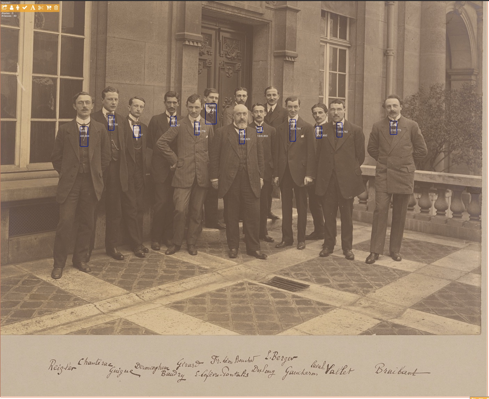
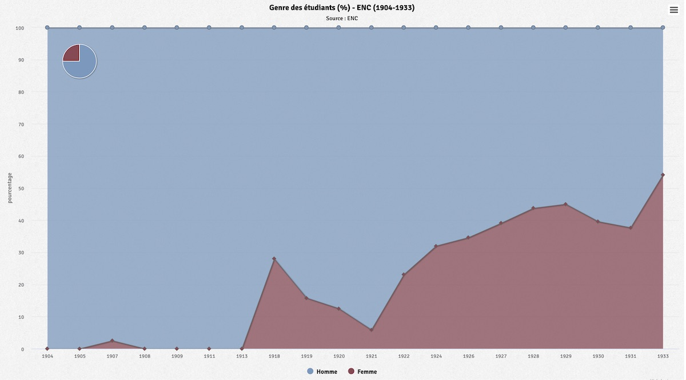
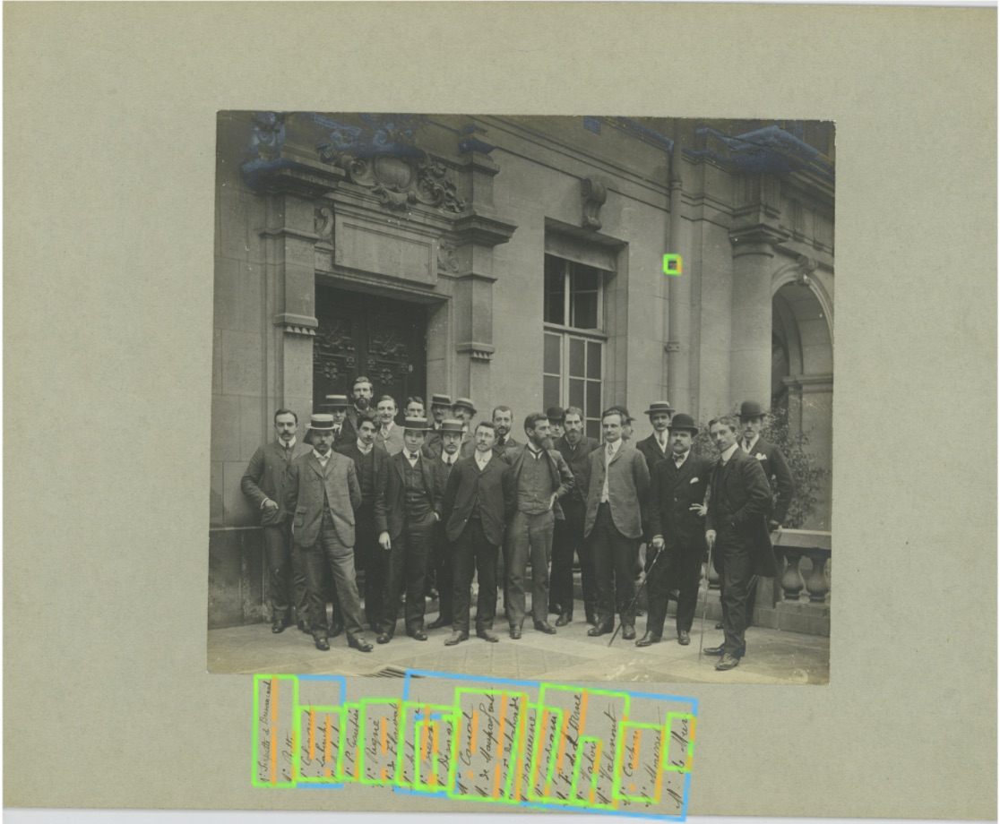
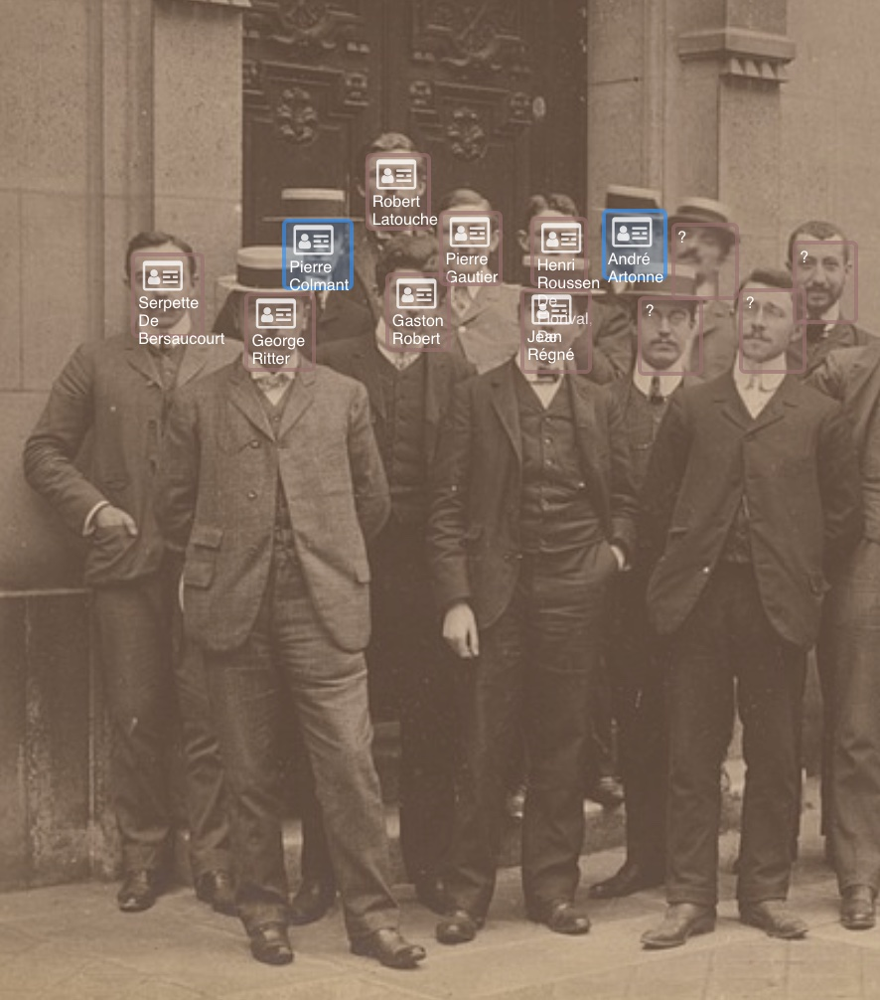

À l’occasion du bicentenaire de l’École nationale des chartes, l’ADEMEC, en partenariat et avec l’aide de l’École, organise un « hackathon bicentenaire ». L’objectif du hackathon est de proposer des créations numériques mettant en valeur les données sélectionnées, pour aborder l’histoire de l’École et sa production scientifique.
Les métadonnées élémentaires (année, niveau, recto ou verso, etc.) du jeu de données "Photos de promotion" sont importées dans le démonstrateur GallicaPix (archictecture (BaseX + REST + XQuery + IIIF).
Les images sont appelées via le serveur IIIF de l'ENC (exemple).
Les images des promotions sont traitées avec plusieurs modèles de détection d'objets :
 Exemple de détection de cravates avec Yolo v4
Les scripts générent des données .csv qui sont ensuite importées dans la base GallicaPix.
Des analyses quantitatives sont produites à partir des détections.
 Analyse des genres des promotions (1904-1933)
Les vignettes de 820 visages sont exportées à l'aide de l'API Images IIIF (exemple) et redimensionnées à une largeur fixe (afin d'agrandir les petites images, script resize.py). Elles sont ensuite agrégées en une mégaimage de portraits au format carré (script matrice.py).
Cette image est ensuite tuilée pour être visualisée avec OpenSeadragon (script make-deepzoom-tiles.py), un visualiseur offrant un zoom profond. Le script génère un fichier de métadonnées et une arborescence de tuiles, qui doivent être copiés dans l'application web de visualisation.
L'image des portraits dans OpenSeadragon
Un test est mené sur la première photographie de promotion disponible (1904-1905). L'image est traité par l'OCR de l'API Google Cloud Vision. L'OCR renvoie le texte suivant :

Une comparaison avec les noms du référentiel des chartistes permet de retrouver les patronymes corrects :
Les différents modèles d'identification des personnes présentes sur les photos (au recto, au verso, par renvois de numéro, etc.) incite à mettre en place une interface participative nourrie par les détections de visage et des propositions de nom extraites des métadonnées.
Cette identification permet ensuite de lier les visages à leur position de thèse et à leurs identifiants IDREF et VIAF.

{% endblock %}{kind=link}